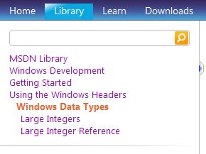

Windowsプログラミングでいずれ必要になる"API"の、体系だった入門書として定評のある「APIで学ぶWindows徹底理解」読書メモです。
- 読書メモ/「APIで学ぶWindows徹底理解」/Part1-Part5
- 読書メモ/「APIで学ぶWindows徹底理解」/Part6-Part10
- 読書メモ/「APIで学ぶWindows徹底理解」/Part11-Part15
- 読書メモ/「APIで学ぶWindows徹底理解」/Part16-Part21
- 読書メモ/「APIで学ぶWindows徹底理解」/Part99
この読書メモの書き方とスタンス
各Part毎の解説について
この読書メモでは各Part毎のテーマについて独自の解説などは加えておりません。代わりに、英語版のMSDNで該当する機能を調べる為の道筋を示すようにしています。
- (例)データタイプ
- "MSDN Library" > "Windows Development" > "Getting Started" > "Using the Windows Headers" > "Windows Data Types"
上のように書いてある時は、英語版MSDNの"Library"タブを開き、左サイドボックス上のナビゲーションリンクを上に書いてあるとおりに辿っていった先のページを参照して欲しいことを示しています。
↓
;
なおナビゲーションについては2010年4月～5月にかけてのMSDNの構成に基づいております。将来の更新に伴い、カテゴライズ名が変更されたり、Web上でのナビゲーション方法が変更される可能性がありますので注意して下さい。
サンプルコードについて
本書に出てくるソースコードは日経のWebページからもダウンロード可能ですが、Borland C++ Compiler用に作られています。これは本書が出版された2004年当時、無償で入手できて利用可能なコンパイラとして最もメジャーだったのがBorland C++ Compilerだったためと思われます。
しかし、6年が経過した2010年現在、無償でVisual Studio Express Editionを入手・利用可能な環境が整っています。
そこで、この読書メモではサンプルコードを Visual C++ 2008 Express Edition 上でコンパイルしてみました。いくつかのサンプルコードについては、余分と思われる機能をそぎ落とし、簡略化しています。また、VC++2008 Express Edition上でコンパイル・動作させるために若干の修正を加えたコードもあります。
サンプルコードのダウンロード
zip形式で圧縮したファイルを以下のURLからダウンロードして下さい。(60KB)
./../medias/winapi_vc_samples_201005.zip
Part6以降については、サンプルコードのトップディレクトリにある"PrintErrorMsg.c", "VirtualWalk.c"を使う例が出てきます。予め、objファイルを作成しておいて下さい。
> cl /c PrintErrorMsg.c > cl /c VirtualWalk.obj
コンパイル時にこれらobjファイルをリンクするようになっています。
"Part99"について
本書で極簡単な解説で済まされている「リソース」について、追加実験的なサンプルコードを作成しています。本書で主に登場するのは文字列、メニュー、ダイアログボックスの３種類となりますが、この読書メモではそれぞれに的を絞った極簡単な実験サンプルコードを示したのが"Part99"となります。
VC++2008 Express Editionでリソースを使ったプログラミングを試してみたい方、あるいは本書を読んでみて「リソース」の扱いや解説、サンプルコードに物足りなさを感じた方は、これを足がかりに調べてみて下さい。